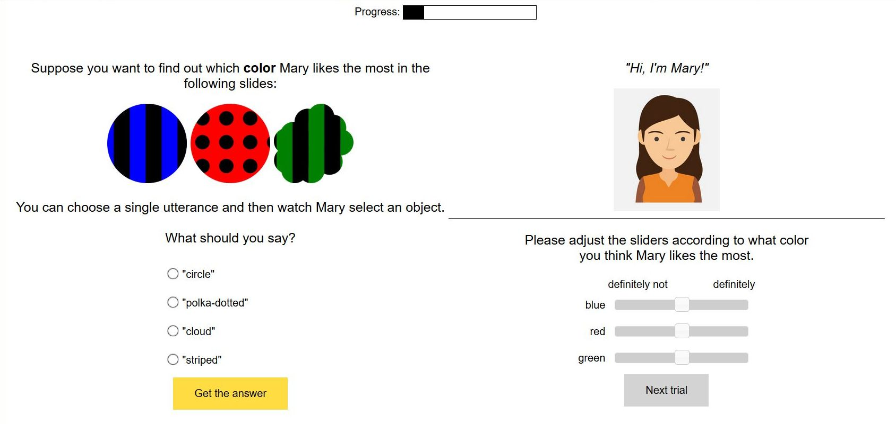
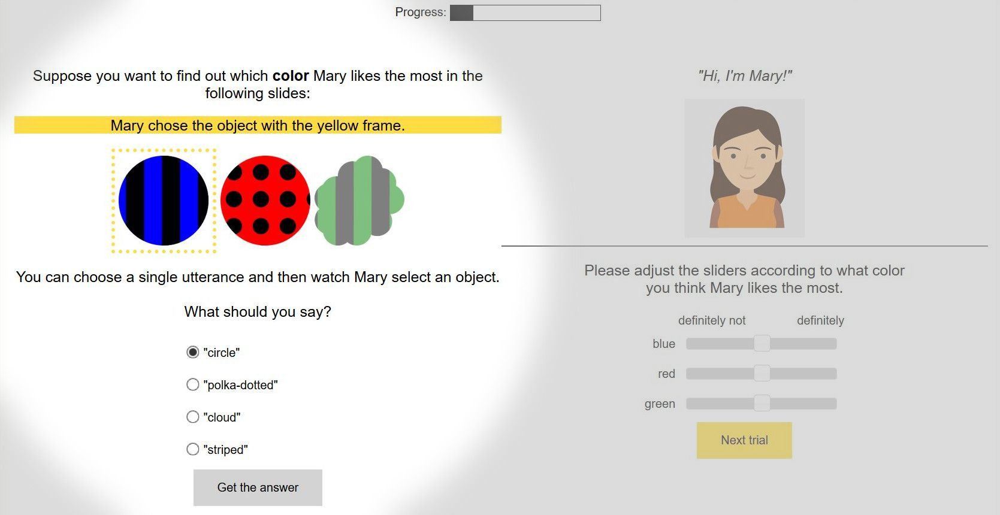
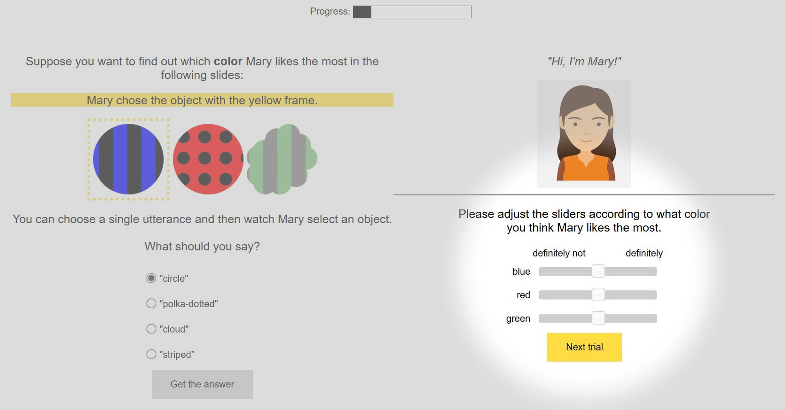

This HIT involves reasoning about images. The task should take about ten minutes.
Please
pay attention. Thanks!
Legal information: By answering the following questions, you are participating in a study being
performed by cognitive scientists at the University of Tübingen, Germany. If you have questions about this
research, please contact Ella Eisemann at
ella-isabel.eisemann@student.uni-tuebingen.de.
You must be at least 18 years old to participate. Your participation in this research is voluntary. You may
decline to answer any or all of the following questions. You may decline further participation, at any time,
without adverse consequences. Your anonymity is assured; the researchers who have requested your
participation will not receive any personal information about you.
Please read the instructions carefully!
The story
"Hi, I'm Mary!"
Tomorrow is Mary's birthday and you don't know her well but you want to give her a birthday
present.
But what should you choose? You have the choice between a number of objects and now you want
to find out which one she will like the most.
Instructions for a block
You will see a series of scenarios with one person and three objects. The person will stay the
same over the whole block but the objects and what you want to find out (color, shape or texture) will
change.
For example the texture can be solid, striped or polka-dotted.
One scenario might look like this:

Your first task is to pick an utterance to indicate to Mary which objects to choose from.
The others will get transparent.
Mary then picks one of these objects that correspond to the utterance. She picks the object she likes most.
You get to observe her choice.
You know that she always says what she thinks and that her preferences don't change over time.
So in this example you chose to say "circle" and Mary then picked the blue and striped one:

Your second task is to adjust the sliders according to what Mary likes.
In this example you should ajust the sliders. Does she like blue? Green? Red?

Experiment
The experiment consists of experimental blocks. In each block you will
need to
find a birthday present for a new person.
Let's go!
Suppose you want to find out which
likes the most in the following slides:
chose the object with the yellow frame.
You can choose a single utterance and then watch
select an object. What should you say?
Please choose one of the utterances before you can see the response.
"Hi, I'm !"
Please adjust the sliders according to what you think likes the most.
definitely not
definitely
Please ajust all the sliders according to what you learned about what likes.
If you didn't learn anything just touch all the sliders.
Are you sure you now know 's preferences
for s?
No, I have no idea.
Yes, I'm sure!
Please answer by moving the slider.
You go to the birthday party.
You guessed that 's favorite is
and that
also likes things.
That's why you give a present with a
birthday card.
is
Actually favorite is and second favourite is
but
doesn't like at all.
Block of
In this next block you will meet a new person and you will again have to find out about their preferences
to find a birthday present for them.
As before, you will see a series of scenarios with the person and three objects. The person will stay the
same over the whole block but the objects will change. The person doesn't lie and the preferences
they have will stay the same over the block.
Are you ready?
Additional information
Answering these questions is optional, but will help us understand your answers.
Did you read the instructions and do you think you did the HIT correctly?
Gender:
Age:
Level Of Education:
Native Language:
Did you enjoy the hit?
We would be interested in any comments you have about this experiment. Please type them here: